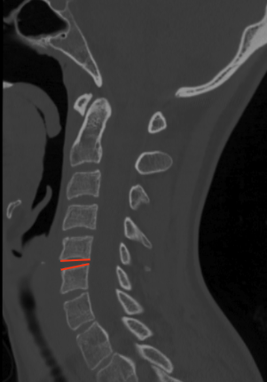

Adapted from: Thibodeau R, Normal CT cervical spine. Case study, Radiopaedia.org (Accessed on 28 Dec 2025) https://doi.org/10.53347/rID-183532
1) Description of Measurement
Angulation between segments quantifies the relative sagittal plane rotation between two adjacent cervical vertebrae and is used to detect segmental instability, fracture–dislocation patterns, and ligamentous disruption.
This measurement reflects abnormal flexion or extension deformity at a motion segment and is a core criterion in the radiographic definition of cervical spinal instability, particularly in trauma settings.
2) Instructions to Measure
3) Normal vs. Pathologic Ranges
Key points:
4) Important References
Bono CM, Vaccaro AR, Fehlings M, Fisher C, Dvorak M, Ludwig S, Harrop J; Spine Trauma Study Group. Measurement techniques for upper cervical spine injuries: consensus statement of the Spine Trauma Study Group. Spine (Phila Pa 1976). 2007 Mar 1;32(5):593-600. doi: 10.1097/01.brs.0000257345.21075.a7.
White AA, Panjabi MM. Clinical Biomechanics of the Spine. 2nd ed. Lippincott; 1990.
Harris JH Jr, Mirvis SE. The Radiology of Acute Cervical Spine Trauma. 3rd ed. Williams & Wilkins; 1996.
Dvorak MF, Fisher CG, Fehlings MG, Rampersaud YR, Oner FC, Aarabi B, Vaccaro AR. The surgical approach to subaxial cervical spine injuries: an evidence-based algorithm based on the SLIC classification system. Spine (Phila Pa 1976). 2007 Nov 1;32(23):2620-9. doi: 10.1097/BRS.0b013e318158ce16.
Daffner RH, Sciulli RL, Rodriguez A, Protetch J. Imaging for evaluation of suspected cervical spine trauma: a 2-year analysis. Injury. 2006 Jul;37(7):652-8. doi: 10.1016/j.injury.2006.01.018.
5) Other info....
CT is excellent for detecting bony malalignment; MRI should be obtained when abnormal angulation is present to evaluate:
Even angulation just above the 11° threshold may be clinically significant in the presence of neurologic symptoms or additional instability markers
In multilevel injuries, the most angulated segment dictates instability grading and management strategy